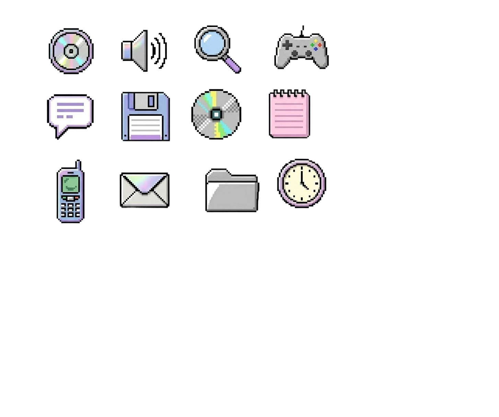

אני לא בגיל לזה!
חוגגים יום הולדת כמו פעם...
מוכנים לחזור אחורה בזמן לתקופה שבה הדאגה הכי גדולה שלכם הייתה מי ינצח במשוך בחבל?
בואו להיזכר! ➔תוכלו למצוא באתר מידע ורעיונות עבור ימי הולדת בטעם של פעם.
בעמוד משחקים תוכלו לראות משחקי יום הולדת נוסטלגיים וחלקם עברו התאמה לגילנו החדש.
בעמוד של קריוקי ועוגה תוכלו למצוא פלייליסט מומלץ לקריוקי ומתכון משובח לעוגת גן נהדרת. בנוסף תוכלו להתנסות בסימולצית עיצוב עוגה.
בעמוד של שקיות הפתעה איגדנו עבורכם מבחר פריטים, שקיות והשראות לחלק הכי כיף בכל מסיבה.
מוזמנים לקרוא אודתינו בעמוד האודות ובמידה ותירצו לשלוח לנו הודעה שאלה או רעיון מוזמנים להשתמש בטופס צור קשר בעמוד המתאים.
כאן תוכלו לבחור מה השלב הבא בהכנות למסיבה שלכם

משחקים ונהנים
משחקי ילדות משודרגים ומותאמים לגילנו
עוגה וקריוקי
שירים שירימו את האווירה ומתכון לעוגת גן

שקיות הפתעה +18
ערכות הישרדות מוכנות או הרכבה עצמית
פרסומת

פרסומת